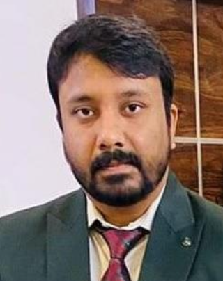

Assistant Professor - since 2019
Department of Geology, Ram Lal Anand College, University of Delhi.

Dr. Ravish Lal
Department of Geology
Ram Lal Anand College, University of Delhi
Ravishlal.geology@rla.du.ac.in
Room No 22, Department of Geology, First Floor, Ram Lal Anand College, University of Delhi, New Delhi - 110021
+91 9773509676
University of Delhi
2017
Hansraj College, University of Delhi
2009 – 2011
Hansraj College, University of Delhi
2006 – 2009
Indian Institute of Science Education and Research (IISER), Mohali, Punjab
Feb 2018 – Jan 2019
Quaternary landscape evolution of Ladakh Himalaya
Geochemistry of sedimentary archives
Provenance study through heavy minerals
Landuse and landcover mapping through Remote Sensing and GIS
Geoarchaeological studies in the Central Narmada Valley to unravel the past human climate interaction
Department of Geology, Ram Lal Anand College, University of Delhi.
Indian Institute of Science Education and Research (IISER), Mohali, Punjab
Department of Geology, University of Delhi
Department of Geology, University of Delhi
Research Publications (Selected)
International Conferences
National Conferences
Field Visit